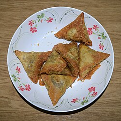

the Indian/Pakistani samosa is believed to be derived from a medieval precursor from the Middle East that was baked and not deep-fried. The earliest mention of a samosa precursor was by Abbasid-era poet Ishaq al-Mawsili, praising the sanbusaj. Recipes are found in 10th–13th-century Arab cookery books, under the names sanbusak, sanbusaq, and sanbusaj, all deriving from the Persian word sanbosag. In Iran, the dish was popular until the 16th century, but by the 20th century, its popularity was restricted to certain provinces (such as the sambusas of Larestan).[4] Abu'l-Fadl Bayhaqi (995–1077), an Iranian historian, mentioned it in his history book, Tarikh-i Bayhaqi.
the Central Asian samsa was introduced to the Indian subcontinent in the 13th or 14th century by chefs from the Middle East and Central Asia who cooked in the royal kitchens for the rulers of the Delhi Sultanate.[13] Amir Khusrau (1253–1325), a scholar and the royal poet of the Delhi Sultanate, wrote around 1300 CE that the princes and nobles enjoyed the "samosa prepared from meat, ghee, onion, and so on".[14] Ibn Battuta, a 14th-century traveller and explorer, describes a meal at the court of Muhammad bin Tughluq, where the samushak or sambusak, a small pie stuffed with minced meat, almonds, pistachios, walnuts, and spices, was served before the third course of pulao. Ni'matnāmah Naṣir al-Dīn Shāhī, a medieval Indian cookbook started for Ghiyath Shah, the ruler of the Malwa Sultanate in central India, mentions the art of making samosa.[16] The Ain-i-Akbari, a 16th-century Mughal document, mentions the recipe for qottab, which it says, "the people of Hindustan call sanbúsah".